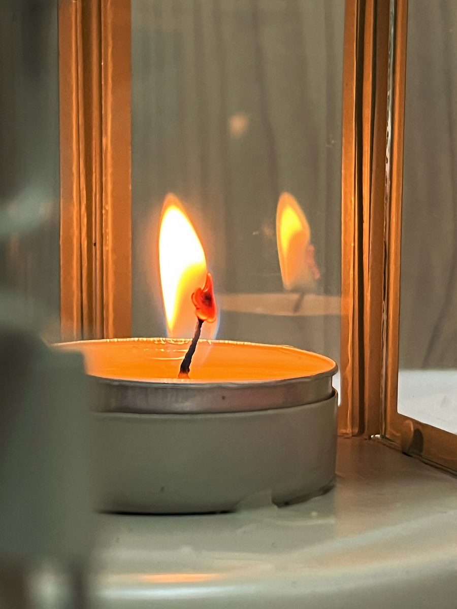
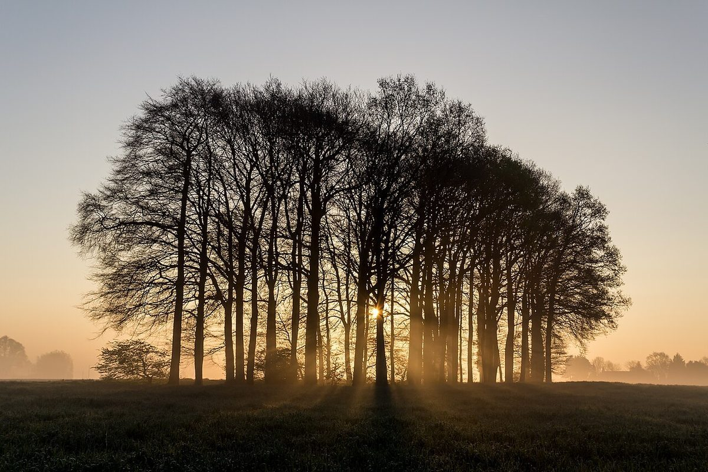
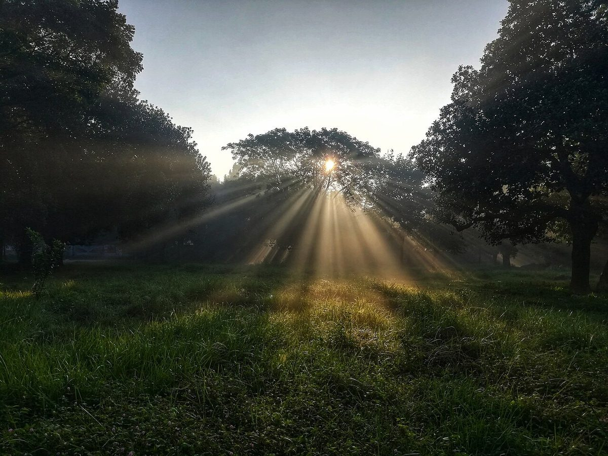
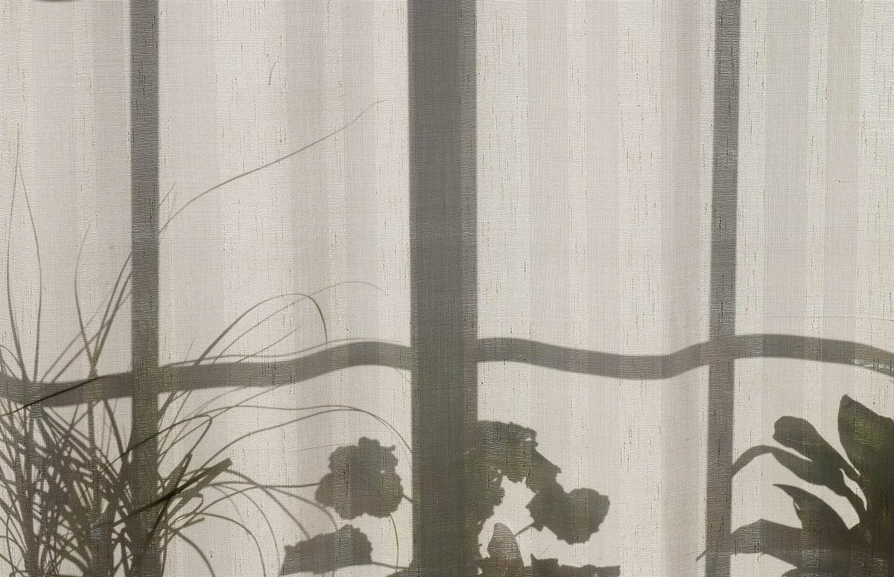
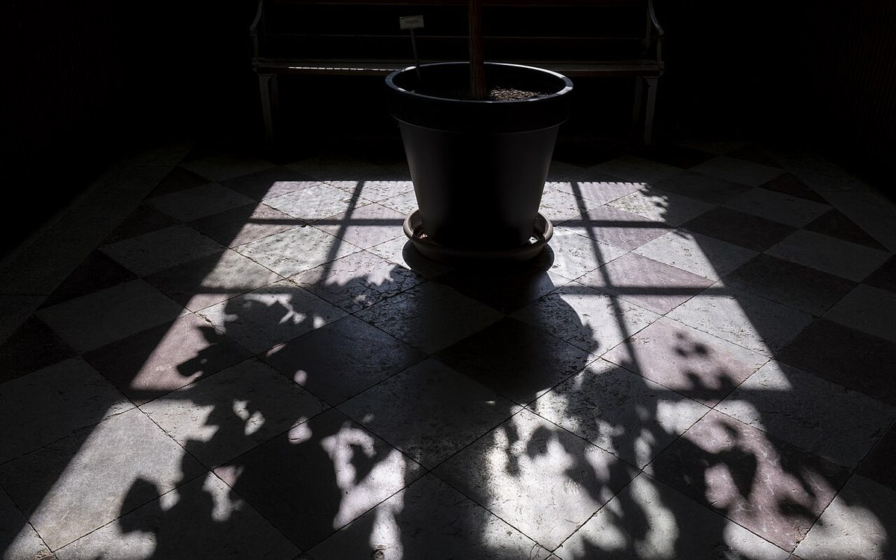
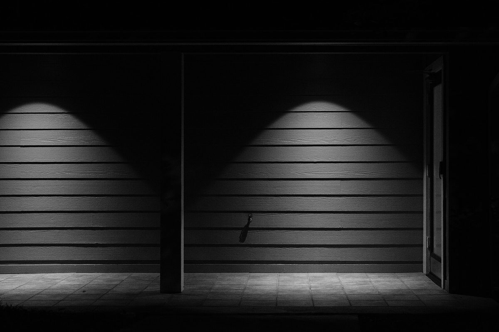
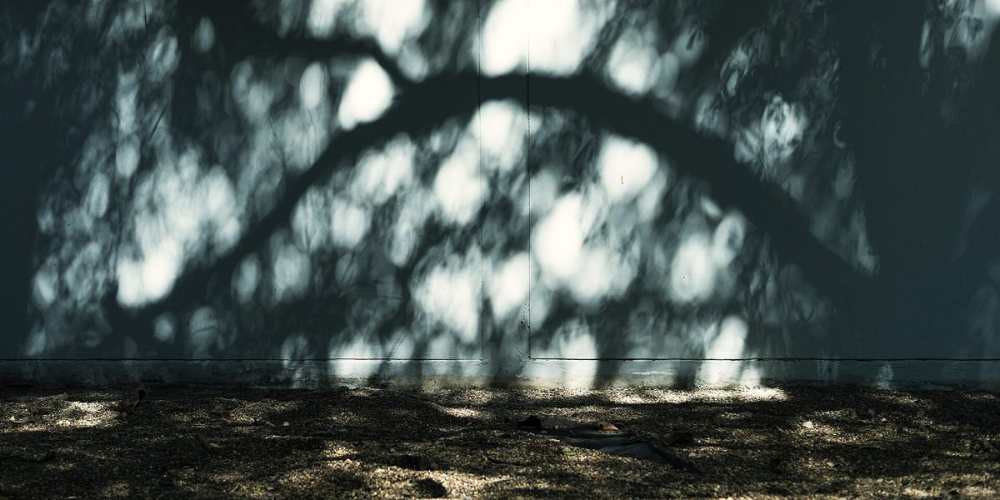
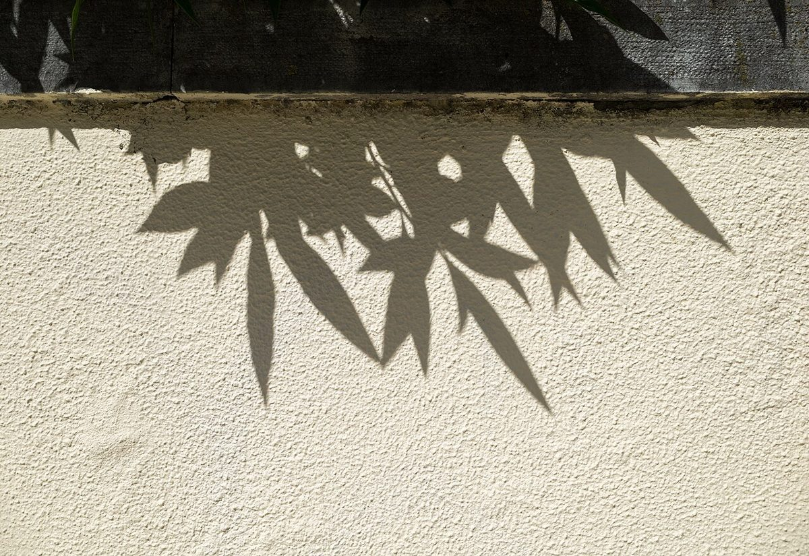
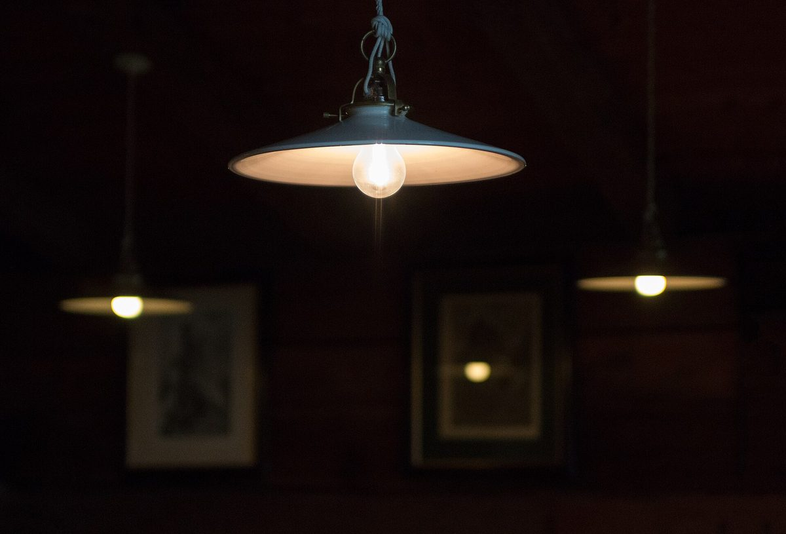

カフェ / 沖縄県沖縄市照屋
CaféNooR
沖縄県沖縄市のカフェ「Café NooR」のご案内ページです。営業時間やメニューなど、詳しいことは準備中。まずはInstagramをのぞいてみてください。

制作側の連想
「NooR」を、点と線の灯りで読む
「NooR」は、光という意味の語として知られています。お店がこの屋号にどんな思いを込めたのかは分かりません。制作側はこの「光」から、モールス信号のような、点(・)と線(―)で灯りを知らせる合図を連想しました。N=―・ / O=――― / O=――― / R=・―・ 。下の11個の灯りは、その並びにあわせて写真を置いたものです。
このデザインは制作側の連想で、お店の理念・由来とは無関係です。
点と線で NooR
十一の灯り
写真はお店のものではなく、国外または撮影地不明のフリー素材のイメージです。
N


O



O



R


ご案内
お店のこと(確認できたものだけ)
| 所在地 | 沖縄県沖縄市照屋1丁目14-16 1F |
|---|---|
| 電話 | なし |
| 営業時間 | 準備中 |
| 定休日 | 準備中 |
| ご予約 | 準備中 |
| 駐車場 | 準備中 |
| SNS | Instagram @cafenoor098 |
町のこと
沖縄市について
沖縄市は、沖縄本島の中部にある市です。ただし、お店と土地との関係は不明です。